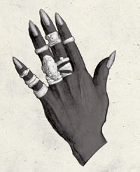

齐雅温纱丽 Kiaransalee（不死复仇女神）
（左二）
黑暗精灵神系 微弱神力
别称：死者女士 Lady of the Dead，复仇者 the Revenancer，复仇怨灵 the Vengeful Banshee
圣徽：戴着多枚银戒指的女性卓尔精灵手掌

居住界域：深坑魔网 Demonweb Pits
阵营：混乱邪恶 CE
神职：不死 Undead，复仇 vengeance
信徒：黑暗精灵，死灵师，不死生物
牧师阵营：混乱中立 CN，邪恶中立 NE，混乱邪恶 CE
神域：混乱 Chaos，邪恶 Evil，卓尔 Drow，报应 Retribution，不死 Undeath
喜好武器：冰冷之心 Cold Heart（匕首 dagger）
齐雅温纱丽的心中满载着各种复仇的思想，使她的本性愈发残酷、心智也愈形扭曲。她在许久之前就已经发疯，心智几乎完全失常，但仍保留着原本的奸巧圆滑、清楚 地记得别人对她的每一件污辱－不论那冒犯是多么的轻微－有些确实发生过、有些却只是她那扭曲的心智所自行编造出来的想象。她拥有非常强大的力量，也十分容易动怒，总是暗中不停地计划着要报复那些错待（过）她的仇敌。她偏好与各种无心智的不死生物为伴（可随她任意操纵）－而不是拥有自我意识与思考能力的智性 生物。她宁可亲自动手去解决问题，也不愿信任他人的代劳。
齐雅温纱丽的教会分成许多组织严密的教团，彼此之间少有联系。她的牧师们都秘密 行事，大都潜伏在小型的黑暗精灵社群或特殊聚落中。她们是「复仇」一词的代言人，无时不刻都在策划着要报复那些曾经杀害、伤害、侮辱过（这点以她们的标准判断）牧师们的罪人。此外，她们也会定期地屠戮无辜者，以获得操纵死尸所需要的原料－她们大都豪不在意地虐待这些无心智的奴隶。
信奉齐雅 温纱丽的牧师在半夜时－此时墓穴中的鬼魂最是难以安息－祈祷以获得神术。她的牧师每个月都会定期举行一些较小型的祭拜仪式，而每逢一年一度的仲冬节前夕 （Midwinter Eve）到来时，他们则会以名为「划开墓穴」（Graverending）的仪式礼赞女神。此仪式必须由每一位牧师独自进行，他们必须在仪式中尽可能地活 化大量的不死生物。这些名为「复仇猎者」（Vengeance Hunter）的生物心中唯有复仇一念－它们会在接下来的24小时内准确无误地追杀从前杀害过自己的凶手。被追猎的目标只要再次摧毁这些不死生物，就能再 次让它们安息。一旦猎者们完成了自己的复仇（或时限已至），它们就会自行返回墓穴。许多信奉死者女士的牧师都会兼职成为死灵师，有些加入龙巫教（Cult of the Dragon）的成员则会兼职成为紫袍祭司（Wearer of Purple），它们最后大都会把自己转化成不死生物。
历史/与众神的关系 History/Relationship：
齐 雅温纱丽本为凡人，是另一个物质界的黑暗精灵女王，也是一位强大的死灵法师。一直以来她都极不情愿地屈居罗丝之下，为蜘蛛神后服务，只能暗中策动一些小小 的抵抗宣泄恨意。在近几年中，她夺取了欧喀斯（Orcus，一位掌管不死力量的妖魔领主）的领域，目前正忙着抹消所有欧喀斯在多元宇宙中存在过的证据与纪录。为了摆脱罗丝的箝制，她与许多神�o结为松散的同盟－包括霍尔（Hoar）、维沙伦（Velsharoon）、马拉（Malar）、以及维伦 （Vhaeraun）。她的仇敌包括了深地�B杜拉（Deep Duerra，灰矮人心灵力量女神）、杜马松垠（Dumathoin，矮人探索之神）、伊莉丝翠（Eilistraee）、克兰沃（Kelemvor）、 拉杜格（Laduguer，灰矮人守护神）、以及耶各（Jergal）。
教义 Dogma：
每个生命最终都需面对死亡，那些虚掷光阴去关切如何生存的蠢人都必定会面临残酷的复仇。只有那些绝对服从的不死者才是真正的力量。汝当猎捕、杀害、活化操纵那些轻视复仇怨灵大能的罪人，并对其他人的冒犯回敬一千倍的报复－如此方可使世人明了死者女士的力量。
--
资料来源：费伦大陆信仰与神系《Faiths & Pantheons》
译者：一凡